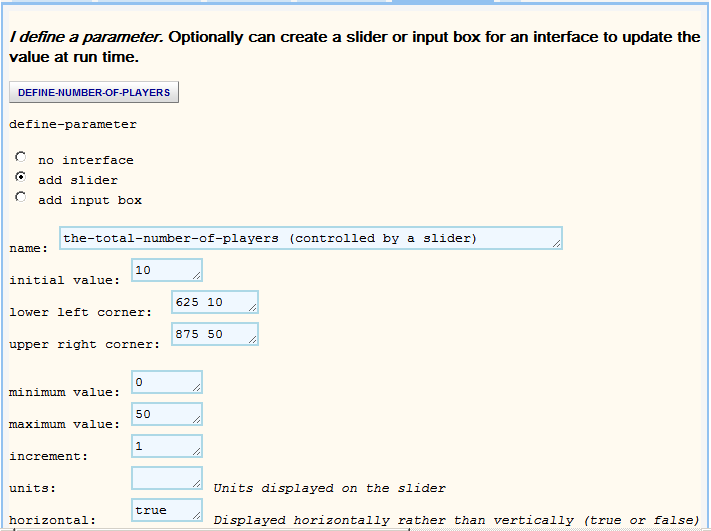
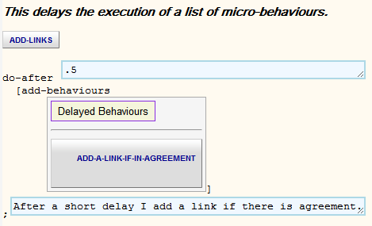

Guide to Modelling Network Formation
Here we describe how to build a model of an economic model of
network formation by Edoardo Gallo using the
BehaviourComposer.
This document has links to all the micro-behaviours needed to construct the
model. Additional behaviours are needed for building variants and enhancements.
They can be found in the full library of
micro-behaviours.
Introduction to the model
Edoardo should write this.
Step 0. You don't need to start completely from scratch
Load the initial model. By clicking on this button you start with a model
that contains Players, Observer, and Sliders with no
behaviours. Support has some behaviours needed only for technical reasons.
Step 1. Create a prototypical player
Players will have a shape for animating the model execution. A number of
copies of the prototype need to be added.
- To set the shape of players go to the
SET-SHAPE micro-behaviour. Replace 'fish' with one of the supported shapes (e.g.
'person'). Click on the 'SET-SHAPE' micro-behaviour button and from the menu
select Add
it to your prototype. Click on Player to add it there.
- Open ADD-COPIES
and edit the 9 to the expression the-total-number-of-players - 1.
We subtract one because the prototype itself will also be part of the model.
-
You need to define the-total-number-of-players by customising
DEFINE-PARAMETER. Selecting
add slider
will ease experimentation. Click on the 'DEFINE-PARAMETER' button
and select rename and type a new name. Click on
the button again to add this to Sliders. The micro-behaviour should look like
this:

- Run your model in the
Composer Area. A new window or tab will
appear. Click on Setup to see your predator.
Try moving the slider and clicking on Setup again.
- You will see that the people are rotated randomly. This is part of the
default behaviour of ADD-COPIES that we don't need. Navigate to the
ADD-COPIES tab and click on 'SET-RANDOM-HEADING' and select
Remove.
- Run your model again in the
Composer Area.
Step 2. Get pairs of players to decide whether to link
Eventually the players will decide to add and remove links, possibly making
errors. Here we start with a simplified model without errors or removal of
links. A pair of players decide whether to add a link to the other and then the
link is added if they have both decided to add the link.
-
REPEATEDLY-ADD-BEHAVIOURS-TO-TWO-RANDOM-PLAYERS chooses two random
players. Add it to Player. (Note that it is important that this
behaviour is after ADD-COPIES, otherwise each copy will do this repeatedly.)
- The following behaviours require some functions and parameters that are
defined in
ADD-NETWORK-FORMATION-PROCEDURES. Add this to Support.
- We need to indicate which behaviours the players should perform. We
start by renaming ADD-BEHAVIOURS to
'TAKE-A-TURN' or the like.
- The SIMPLE-ADD-LINK-DECISION
micro-behaviour compares the utility of the current network with the utility
of the network with the other player added. The player attribute
my-add-link-utility-gain records the difference in utility of the two
networks. The 'gain' can be
negative. my-desire-to-link records the "decision".
Add it to your
'TAKE-A-TURN' micro-behaviour list.
-
We want ADD-A-LINK-IF-IN-AGREEMENT
to run after both players have completed SIMPLE-ADD-LINK-DECISION. To
express this we use DO-AFTER. Since the main
action happens every integer tick of the simulation we should change the
first text area to be .5 to ensure this happens between cycles.
Add
ADD-A-LINK-IF-IN-AGREEMENT
to DO-AFTER. To avoid confusion rename DO-AFTER to 'ADD-LINKS'. Your
micro-behaviour should look like this:

- Add 'ADD-LINKS' to the 'TAKE-A-TURN' micro-behaviour list.
- Add 'TAKE-A-TURN' to both players in
REPEATEDLY-ADD-BEHAVIOURS-TO-TWO-RANDOM-PLAYERS.
- Run your model in the
Composer Area.
Step 3. A good layout of the players helps see patterns
The players are scattered randomly in the model. If, instead, we use a layout
such as a circle (LAYOUT-CIRCLE) or a dynamic
one that models links as springs (LAYOUT-SPRING)
then it will be easier to see the structure of the emerging network.
- Add LAYOUT-CIRCLE to Player (be
sure it is after ADD-COPIES).
- Run your model in the
Composer Area.
- Click on 'LAYOUT-CIRCLE' on Player
and select Inactivate to temporarily remove it
from the model.
- Add LAYOUT-SPRING to Player.
- Run your model in the
Composer Area.
- If you prefer inactivate 'LAYOUT-SPRING'
and activate 'LAYOUT-CIRCLE'.
Step 4. Players should decide whether to drop links
Players should be able to unilaterally choose to drop a link.
- Add
SIMPLE-REMOVE-LINK-DECISION to 'TAKE-A-TURN' (inside 'REPEATEDLY-ADD-BEHAVIOURS-TO-TWO-RANDOM-PLAYERS').
Click on the behaviour after adding it to Move it up
since it is important to make the decisions before acting.
- Add
REMOVE-A-LINK-IF-DECIDED to
'ADD-LINKS' (and perhaps rename 'ADD-LINKS' to 'ADD-AND-REMOVE-LINKS').
- Run your model in the
Composer Area.
Step 5. Log the decisions the players make
We can produce a log of every decision to add or remove links for analyse and
debugging.
- Add
LOG-DESIRE-TO-ADD-A-LINK to
'TAKE-A-TURN'. Move it so it runs immediately
after 'SIMPLE-ADD-LINK-DECISION'.
- Add
LOG-DESIRE-TO-REMOVE-A-LINK
to 'TAKE-A-TURN'. Move it so it runs
immediately after 'SIMPLE-REMOVE-LINK-DECISION'.
- Run your model in the
Composer Area. The log will appear in the
narrow area at the bottom of the applet. We recommend you click there, type
control-a to select all and then control-c to copy it to the clip board to
inspect in a text editor.
Step 6. Graph the changes in utility
- Add
CREATE-TOTAL-UTILITY-PLOT to
Observer to add a plot of total utility over time.
- Run your model in the
Composer Area.
Step 7. Add sliders to facilitate experimentation
We can replace any of the model parameters with sliders that can be altered
before or during model execution.
- Open
ADD-NETWORK-FORMATION-PROCEDURES and open
'DIRECT-LINK-COST' and select add slider. Edit
the fields so that the maximum value is 1 and the increment is .01.
- Do the same for 'DIRECT-LINK-BENEFIT'.
- Do the same for 'INDIRECT-BENEFIT-LINK-DECAY'.
- Run your model in the
Composer Area.
- Experiment with ...
Step 8. Model players making mistakes
We can add noise to our model by randomly flipping the decisions of players.
This can help jog the system off of local optima.
- Add
ADD-LINK-DECISION-ERROR to
'TAKE-A-TURN'. Move it so it occurs before
'ADD-AND-REMOVE-LINKS'.
- Add
REMOVE-LINK-DECISION-ERROR to
'TAKE-A-TURN'. Move it so it occurs before
'ADD-AND-REMOVE-LINKS'.
- Run your model in the
Composer Area.
- Open
ADD-NETWORK-FORMATION-PROCEDURES and open
'ODDS-OF-ADD-LINK-ERROR' and select add slider.
Edit the fields so that the maximum value is 1 and the increment is
.01.
- Do the same for 'ODDS-OF-REMOVE-LINK-ERROR'.
- Run your model in the
Composer Area.
- Observe ...
Step 9. Assign players to different 'groups'
We can enhance our model by introducing the concept of groups that players
belong to. We can model different costs for links within a group than across
groups.
- Add
SET-MY-GROUP to Player
- Open
ADD-NETWORK-FORMATION-PROCEDURES and open
'SAME-GROUP-DIRECT-LINK-COST' and select add slider.
Edit the fields so that the maximum value is 1 and the increment is
.01.
- Add instructions for adding
switch and number of group slider
- Run your model in the
Composer Area.
- Observe ...
Step 10. Benefits
truncated when a maximum distance is exceeded
Step 11. Give some players limited knowledge about the network
Step 12. Help us improve this session and guide
Please fill in this
short questionnaire.
Here is a
sample model that adds sliders for several of the parameters of this model
for easy experimentation.